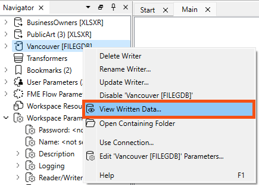
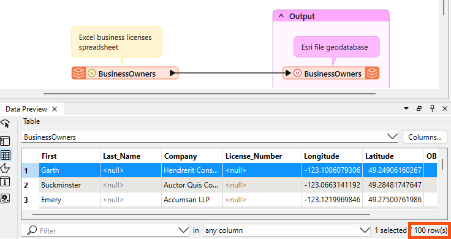
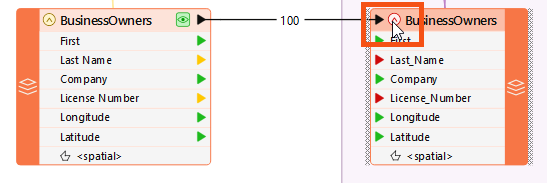
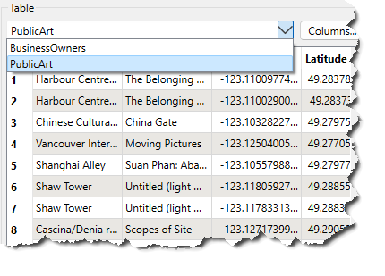
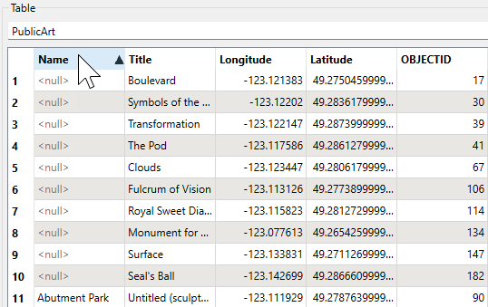
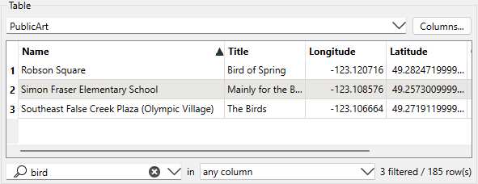

Learning Objectives
After completing this lesson, you’ll be able to:
- View your data as a table.
- Use Data Preview to verify the results of a workspace.
Instructions
In this lesson, you will:
- Scroll down to read the text below.
- Complete the exercise by following the steps.
- Complete the Quiz toward the bottom of the page.
- Optional: Let us know if you found this lesson relevant to your role by filling out the survey at the bottom of the page.
- Click 'Next' to mark the lesson complete.
Resources
Viewing Tabular Data

Sven continues to work on his Excel to geodatabase workspace. He'd like to have a closer look at his attributes and their values using Data Preview's Table View.
1) Open Starting Workspace
- Open FME Workbench (2026.1 or later).
- Open the starting workspace (C:\FMEData\Workspaces\IntegrateDataWithTheFMEPlatform\view-data-as-a-table.fmw).
2) Inspect Written Data
- Inspect the Vancouver.gdb output by right-clicking on the Vancouver [FILEGDB] writer in the Navigator and selecting View Written Data….
- BusinessOwners and PublicArt appear in Data Preview. If you had clicked View Written Data on a writer feature type instead, only that feature type would have been displayed in Data Preview.

- Observe that Table view now displays BusinessOwners.
3) Inspect Data Quantity
After running the translation, the bottom-right corner of the Table view shows the number of rows (100). This number matches the feature count on the feature connection line on the canvas. You can use this count to confirm that FME wrote all the features you expected.
- Look in the bottom-right of the Table view of Data Preview to confirm that FME read 100 features and confirm that 100 exist in the written data.
- Remember that a feature is a row in a table or a single piece of geometry (point, line, polygon, etc.) and its associated attributes.

4) Inspect Attributes
The Table view shows an extra attribute: OBJECTID. The writer may create additional attributes if the format requires them, as in this case. All Esri geodatabase datasets contain an OBJECTID attribute. An ObjectID is a unique, non-null integer field used to uniquely identify rows in tables in a geodatabase.
- Check that all the desired columns (feature attributes) are present and have values by using Table view in Data Preview.
- Observe that the cells for Last_Name and License_Number are all <null>.
- This is typically a bad sign; null means no value for that attribute. They had values in the source data, so this is a problem.
- On the canvas, click on the red triangle on the BusinessOwners writer feature type to expand it.
- Once expanded, you can see all the feature type’s attributes.

The triangles are red beside the attributes with null values. The red triangles indicate that the attribute is not mapped to a source attribute. This occurred because the spaces in Last Name and License Number were converted to underscores. The spaces were converted to underscores because the Esri geodatabase format does not support spaces in attribute names.
Because Last Name is not the same as Last_Name, the attributes don't match, and therefore FME drops the values of Last Name when features enter the writer.

⭐ New for 2025.0: we now show the presence of geometry columns on expanded feature types, as shown in the screenshot above (<spatial>).
5) View a Different Table
Vancouver.gdb also contains the PublicArt feature class.
- Click on the drop-down triangle beside BusinessOwners in Table view and change the table to display data for PublicArt.
- You will only be able to switch tables if you are inspecting more than one feature type or feature cache. If you can't switch tables, repeat the steps in step 2 bove to ensure you are inspecting the entire geodatabase, which contains both the BusinessOwners and PublicArt feature types.
- If you still don't see PublicArt, make sure you have written the data out by running the workspace again.
- If you still don't see it, open the starting workspace for this lesson. It's likely your workspace is not configured correctly.

6) Sort By Attributes
You may also notice that PublicArt is not sorted alphabetically by name.
- Click on the Name heading to sort the column alphabetically.
- This is also a way to find <null> attribute values. Null attributes will appear first.

7) Filter by Attribute Value
Sven’s colleagues are interested in birds, and he is curious if there is any bird-related public art.
- Type "bird" in the search bar at the bottom of the Table view.
- The Table view then filters to display the three features with "bird" in an attribute value.

Leave Us Feedback on This Lesson